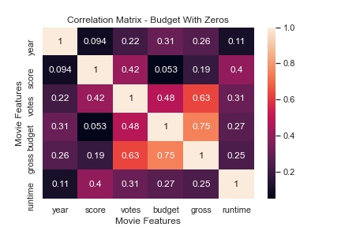
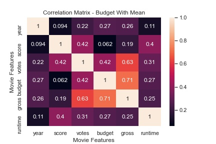
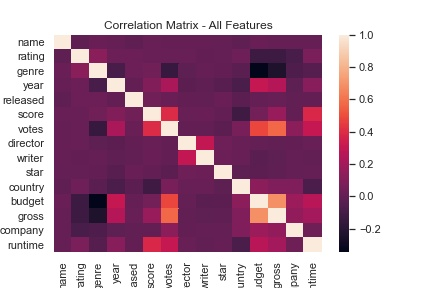

I'm interested to see which features have the highest correlation to not just one another, but which have the highest correlation to how much revenue a movie will make
The Data:
The Movie data can be found in this Kaggle Dataset and came with the following features:
- name; object
- rating; object
- genre; object
- year; int64
- released; object
- score; float64
- votes; float64
- director; object
- writer; object
- star; object
- country; object
- budget; float64
- gross; float64
- company; object
- runtime; float64
Preprocessing/Cleaning
Most features had hardly any missing values. In fact, I still had 96% of the origional dataset even after dropping rows with missing values.
Unfortunately, the one feature that I was very interested in--the budget of the film-- had about 27% missing values. I decided to approach the problem in three different ways and compare the results:
- Leave missing values as Null
- Replace missing values with 0
- Impute missing values with the average
If we take leaving the Null values as our control, replacing them with zero had and intersting result. Higher correlated featuers were strengthed while lower correlated features were reduced when compared to budget. The rest of the heatmap is identical which is expected. Imputing the mean served to only reduce highly correlated features.
 All Features
Out of curiosity, I converted all object features to numeric and placed them all into a heatmap. However, none of the categorical data is highly correlated to budget.

Conclusion
I was correct that votes and budget had a high correlation to the gross of a film. However, score turned out to have very low correlation to gross. This suggests a film doesn't have to be well recieved to earn a large profit or vice versa. One film that comes to mind as an example of the former case is The Emoji Movie:
Score: 3.3; Gross: $217 million